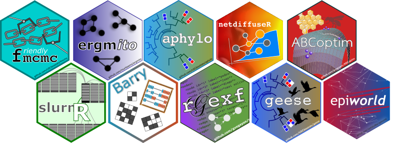
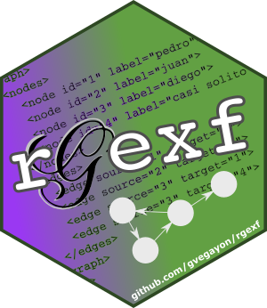

Software
I am deeply committed to open-source software and have been building professional-grade tools for over 15 years—going back to the days of Google Code here. My work combines rigorous statistical methods with modern software engineering practices, including version control (Git/GitHub), continuous integration, agentic AI, container technologies, and agile methodologies. I have led scientific software development teams to deliver high-performance, reliable, and user-friendly tools that are widely adopted by researchers and practitioners. Most of my work is built in C++ with wrappers for R and Python, optimized for use in high-performance computing environments. Across all projects, I design with performance and usability in mind, ensuring that complex methods can be both scalable and accessible.
A couple of projects to highlight include:

The epiworld framework is an advanced agent-based modeling framework written in C++ that was designed for rapid prototyping of simulation models focused on epidemiological modeling. The library is available in R, Python, as well as a shiny package.
The most notable application of epiworld is with the modeling of measles during the recent US outbreaks. You can see a version of the shiny app that was developed here. 

The rgexf package. Create, read, and write ‘GEXF’ (Graph Exchange ‘XML’ Format) graph files (used in ‘Gephi’ and others). Using the ‘XML’ package, rgexf allows reading and writing GEXF files, including attributes, ‘GEXF’ visual attributes (such as color, size, and position), network dynamics (for both edges and nodes), and edges’ weights. Users can build/handle graphs element-by-element or massively through data frames, visualize the graph on a web browser through ‘gexf-js’ (a ‘javascript’ library), and interact with the ‘igraph’ package.
You can see a live version of the gexf-js library in action here. 

The ergmito R packagee. Simulation and estimation of Exponential Random Graph Models (ERGMs) for small networks using exact statistics as shown in Vega Yon et al. (2020) https://doi.org/10.1016/j.socnet.2020.07.005. As a difference from the ‘ergm’ package, ‘ergmito’ circumvents using Markov-Chain Maximum Likelihood Estimator (MC-MLE) and instead uses Maximum Likelihood Estimator (MLE) to fit ERGMs for small networks. As exhaustive enumeration is computationally feasible for small networks, this R package takes advantage of this and provides tools for calculating likelihood functions, and other relevant functions, directly, meaning that in many cases both estimation and simulation of ERGMs for small networks can be faster and more accurate than simulation-based algorithms. 
The following is an exhaustive list of the software packages I have either built or contributed. You can take a look at my most recent contributions and ongoing open source projects on my GitHub